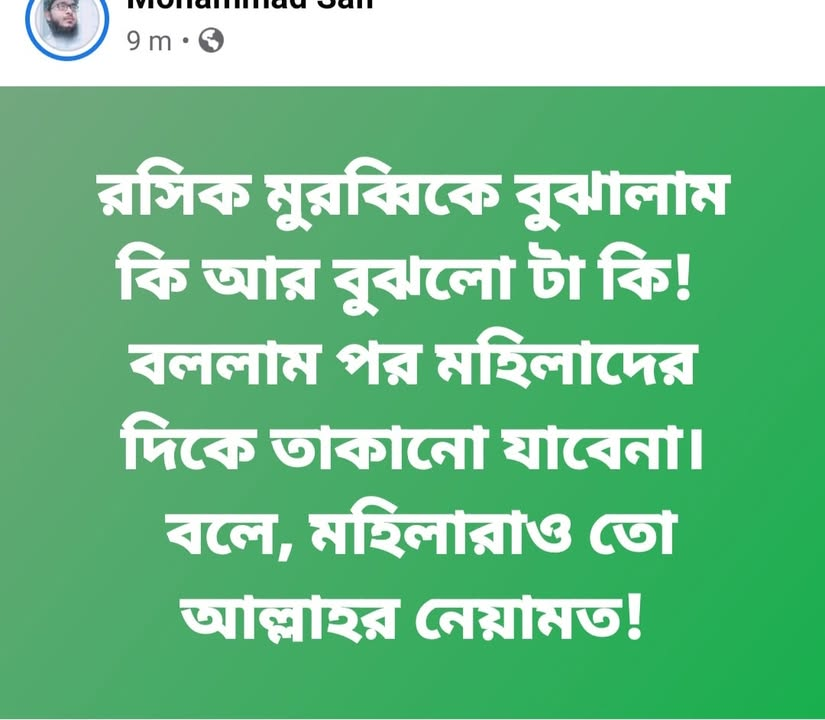

হাদিসের ভাষ্যমতে "আখেরি জামানায় মানুষ সকালে মুমিন থাকবে তো বিকেলে কাফের হয়ে যাবে।…
১০ ডিসেম্বর, ২০২০
হাদিসের ভাষ্যমতে "আখেরি জামানায় মানুষ সকালে মুমিন থাকবে তো বিকেলে কাফের হয়ে যাবে। বিকেলে মুমিন থাকবে তো সকালে কাফের হয়ে যাবে।"
(স্ক্রিনশট থেকে এর বাস্তবতা মিলিয়ে নিতে পারেন।)
"আল্লাহ'র বিধান নিয়ে তামাশা করা ঈমান ভঙ্গের উল্লেখযোগ্য কারণ" গাইরে মাহরাম নারীদের দিকে তাকানো নিষেধ- এটি আল্লাহ'র বিধান। কিন্তু 'নারীও তো আল্লাহ'র অপরূপ সৃষ্টি ও নিয়ামত। আল্লাহ'র সৃষ্টি দেখতে আবার অসুবিধা কোথায়'!- এমন জোক অনেকেই করে থাকেন। বুঝে হোক বা না-বুঝে। আর তা যে ঈমান ধ্বংসের জন্য যথেষ্ট, এ খেয়াল অনেকেই হয়ত করেন না। ঈমান অত্যান্ত সেনসিটিভ বিষয়। ঈমান রক্ষা করে চলা সময়ের সবচে' বড়ো চ্যালেঞ্জ। আল্লাহ আমাদের ঈমান হেফাজত করুক।
